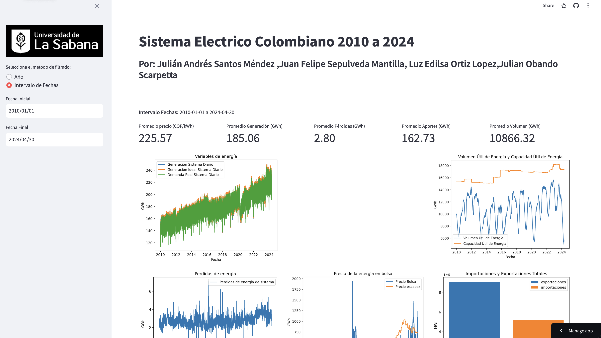

11. Creación de dashboard#
El objetivo de este segmento del trabajo es mostrar el paso a paso de creación del dashboard con streamlit.
El dashboard en linea puede consultarse aquí: https://electrico-colombia.streamlit.app
11.1. Muestra#

import streamlit as st
import pandas as pd
import plotly.express as px
import matplotlib.pyplot as plt
import psycopg2 as ps
import pandas as pd
from sqlalchemy import create_engine
import os
import datetime
11.2. Se realizo la configuración de la pagina con el logo de la universidad#
st.set_page_config(
page_title="Sistema electrico Colombiano 2010 a 2024",
page_icon="🧊",
layout="wide")
st.sidebar.image('logo 2.png', use_column_width=True)
11.3. Se realizo la configuración de titulo y subtitulo#
# Crear una aplicación de Streamlit
st.title("Sistema Electrico Colombiano 2010 a 2024")
st.subheader("Por: Julián Andrés Santos Méndez ,Juan Felipe Sepulveda Mantilla, Luz Edilsa Ortiz Lopez,Julian Obando Scarpetta")
st.divider()
11.4. Conexión a la Base de Datos de Analítica en AWS#
DB_USER_AWS=os.getenv('DB_USER')
DB_PASSWORD_AWS=os.getenv('DB_PASSWORD')
DB_HOST_AWS=os.getenv('DB_HOST')
DB_PORT_AWS=os.getenv('DB_PORT')
DB_NAME_AWS="analitica_sistema_electrico"
conn = create_engine(f'postgresql://{DB_USER_AWS}:{DB_PASSWORD_AWS}@{DB_HOST_AWS}:{DB_PORT_AWS}/{DB_NAME_AWS}', echo=False)
11.5. Lectura del DataSet de Analítica#
sql_query = """SELECT * FROM analitica_sistema_electrico_colombia"""
df_sistema_electrico = pd.read_sql_query(sql_query, con=conn)
df_sistema_electrico['Date'] = pd.to_datetime(df_sistema_electrico['Date'])
df_sistema_electrico
11.5.1. Descripción de las Variables#
A continuación se lista todas las variables disponibles para el analisis. El dataset continue el valor de la variable por cada dia de operacion del sistema.
No. |
Variable |
Metrica |
Unidad |
Descripción |
Unidad de Análisis |
|---|---|---|---|---|---|
1 |
generacion_sistema_daily |
Generación por Sistema |
kWh |
Generación neta de cada una de las plantas Nacionales en sus puntos de frontera. |
GWh |
2 |
generacion_ideal_sistema_daily |
Generación Ideal por Sistema |
kWh |
Despacho de generación que resulta de considerar una red de transporte inexistente. |
GWh |
3 |
perdidas_sistema_daily |
Pérdidas de Energía por Sistema |
kWh |
Cantidad de las inyecciones de energía al Sistema de Transmisión Nacional, menos la cantidad de los flujos… |
GWh |
4 |
volumen_util_energia_sistema_daily |
Volumen Útil diario Energía Sistema |
kWh |
Volumen almacenado por encima del Nivel Mínimo Técnico, reportado diariamente por los agentes. |
GWh |
5 |
emisiones_sistema_daily |
Emisiones de CO2 por RecursoComb |
TonCO2 |
Emisiones totales de Dióxido de Carbono – CO2 de las plantas de generación registradas ante el CND. |
kTonCO2 |
6 |
aportes_energia_sistema_daily |
Aportes Energía por Río |
kWh |
Caudales en energía de los ríos que aportan agua a algún embalse del SIN. |
GWh |
7 |
aportes_energia_mediaHist_sistema_daily |
Aportes Media Histórica Energía por Río |
kWh |
Caudal medio mensual histórico en energía para los ríos del SIN. |
GWh |
8 |
capacidad_util_energia_sistema_daily |
Capacidad Útil Energía por Embalse |
kWh |
Corresponde al Volumen Útil del Embalse, que se define como el volumen almacenado entre el nivel Mínimo Técnico y el Nivel Máximo Físico |
GWh |
9 |
demanda_real_sistema_daily |
Demanda Real por sistema |
kWh |
Demanda de usuarios regulados y no regulados que hacen parte del Sistema Interconectado Nacional. |
GWh |
10 |
exportaciones_sistema_daily |
Exportaciones de energía |
kWh |
Transferencias de Energía desde Colombia hacia otros países. |
MWh |
11 |
importaciones_sistema_daily |
Importaciones de energía |
kWh |
Transferencias de Energía desde otros países para abastecer la demanda nacional. |
MWh |
12 |
precio_bolsa_sistema_daily |
Precio Bolsa Promedio Aritmético |
COP/kWh |
Promedio aritmético del precio de bolsa nacional. |
COP/kWh |
13 |
precio_escasez_sistema_daily |
Precio Marginal Escasez por Sistema |
COP/kWh |
Precio Marginal de Escasez calculado de acuerdo con la Resolución CREG 140 del 2017. |
COP/kWh |
14 |
comsumo_combustible_daily |
Consumo Combustible MBTU por Recurso |
MBTU |
Los generadores térmicos deben reportar diariamente el consumo de combustible en MBTU. |
MMBTU |
15 |
disponibilidad_real_daily |
Disponibilidad Real |
kW |
Disponibilidad promedio calculada a partir de la fecha de los eventos que modifican la disponibilidad de las unidades de generacion de los generadores, asi como de la disponibilidad reportada al Centro de despacho. |
MW |
11.5.2. Conversion de Unidades a las Unidades de Análisis#
def convertir_unidades(df):
# Crear un diccionario con los factores de conversión
conversion_factors = {
'generacion_sistema_daily': 1e-6, # kWh to GWh
'generacion_ideal_sistema_daily': 1e-6, # kWh to GWh
'perdidas_sistema_daily': 1e-6, # kWh to GWh
'volumen_util_energia_sistema_daily': 1e-6, # kWh to GWh
'emisiones_sistema_daily': 1e-3, # TonCO2 to kTonCO2
'aportes_energia_sistema_daily': 1e-6, # kWh to GWh
'aportes_energia_mediaHist_sistema_daily': 1e-6, # kWh to GWh
'capacidad_util_energia_sistema_daily': 1e-6, # kWh to GWh
'demanda_real_sistema_daily': 1e-6, # kWh to GWh
'exportaciones_sistema_daily': 1e-3, # kWh to MWh
'importaciones_sistema_daily': 1e-3, # kwh to MWh
'precio_bolsa_sistema_daily': 1, # COP/kWh to COP/kWh (no conversion needed)
'precio_escasez_sistema_daily': 1, # COP/kWh to COP/kWh (no conversion needed)
'comsumo_combustible_daily': 1e-3, # MBTU to MMBTU
'disponibilidad_real_daily': 1e-3, # kWh to MWh
}
# Aplicar las conversiones
for column, factor in conversion_factors.items():
df[column] = df[column] * factor
# Mostrar el DataFrame convertido
return df
df_sistema_electrico_converted = df_sistema_electrico.copy()
df_sistema_electrico_converted = convertir_unidades(df_sistema_electrico_converted)
11.6. Creación del filtro de año#
# Convertir la columna 'Date' a tipo datetime
df_sistema_electrico_converted['Date'] = pd.to_datetime(df_sistema_electrico_converted['Date'])
# Establecer la columna 'Date' como índice
df_sistema_electrico_converted = df_sistema_electrico_converted.set_index('Date')
start_date = datetime.date(2010, 1, 1)
end_date = datetime.date(2024, 4, 30)
tipo_filtro = "Año"
tipo_filtro = st.sidebar.radio(
"Selecciona el metodo de filtrado: ",
["Año", "Intervalo de Fechas"],
index=1,
)
if tipo_filtro=="Año":
years = list(range(2010, 2025))
selected_year = st.sidebar.selectbox('Selecciona un año:', years)
# Filtrar el DataFrame por el año seleccionado
start_date = f'{selected_year}-01-01'
end_date = f'{selected_year}-12-31'
else:
start_date = st.sidebar.date_input("Fecha Inicial", datetime.date(2010, 1, 1))
end_date = st.sidebar.date_input("Fecha Final", datetime.date(2024, 4, 30))
# Filtrar el dataframe por los años seleccionados
#df_filtrado = df_sistema_electrico_converted[df_sistema_electrico_converted.index.year.isin(años_seleccionados)]
df_filtrado = df_sistema_electrico_converted[start_date:end_date]
st.markdown("**Intervalo Fechas:** "+str(start_date)+" a "+str(end_date))
11.7. Funciones y tarjetas principales#
promedio_Precio = df_filtrado['precio_bolsa_sistema_daily'].mean()
promedio_generacion = df_filtrado['generacion_sistema_daily'].mean()
promedio_perdidas = df_filtrado['perdidas_sistema_daily'].mean()
promedio_aportes= df_filtrado['aportes_energia_sistema_daily'].mean()
promedio_volumen = df_filtrado['volumen_util_energia_sistema_daily'].mean()
# Mostrar los promedios en tarjetas
col1, col2, col3, col4, col5 = st.columns(5)
col1.metric("Promedio precio (COP/kWh)", f"{promedio_Precio:.2f}")
col2.metric("Promedio Generación (GWh)", f"{promedio_generacion:.2f}")
col3.metric("Promedio Pérdidas (GWh)", f"{promedio_perdidas:.2f}")
col4.metric("Promedio Aportes (GWh)", f"{promedio_aportes:.2f}")
col5.metric("Promedio Volumen (GWh)", f"{promedio_volumen:.2f}")
11.8. Creación de graficos#
# Gráfico de Variables de energia
fig1, ax1 = plt.subplots()
ax1.plot(df_filtrado.index, df_filtrado['generacion_sistema_daily'], label='Generación Sistema Diario')
ax1.plot(df_filtrado.index, df_filtrado['generacion_ideal_sistema_daily'], label='Generación Ideal Sistema Diario')
ax1.plot(df_filtrado.index, df_filtrado['demanda_real_sistema_daily'], label='Demanda Real Sistema Diario')
ax1.legend()
ax1.set_title('Variables de energía')
ax1.set_xlabel('Fecha')
ax1.set_ylabel('GWh')
# Gráfico de aportes de energía y aportes sistema media
fig2, ax2 = plt.subplots()
ax2.plot(df_filtrado.index, df_filtrado['aportes_energia_sistema_daily'], label='Aportes de Energía')
ax2.plot(df_filtrado.index, df_filtrado['aportes_energia_mediaHist_sistema_daily'], label='Aportes Sistema Media')
ax2.legend()
ax2.set_title('Aportes de Energía y Aportes Sistema Media')
ax2.set_xlabel('Fecha')
ax2.set_ylabel('GWh')
# Gráfico de volumen útil de energía y capacidad útil de energía
fig3, ax3 = plt.subplots()
ax3.plot(df_filtrado.index, df_filtrado['volumen_util_energia_sistema_daily'], label='Volumen Útil de Energía')
ax3.plot(df_filtrado.index, df_filtrado['capacidad_util_energia_sistema_daily'], label='Capacidad Útil de Energía')
ax3.legend()
ax3.set_title('Volumen Útil de Energía y Capacidad Útil de Energía')
ax3.set_xlabel('Fecha')
ax3.set_ylabel("GWh")
# Mostrar las figuras en el dashboard
col6, col7 , col8= st.columns(3)
with col6:
st.pyplot(fig1)
with col7:
st.pyplot(fig2)
with col8:
st.pyplot(fig3)
# Gráfico de perdida de energía
fig4, ax4 = plt.subplots()
ax4.plot(df_filtrado.index, df_filtrado['perdidas_sistema_daily'], label='Perdidas de energía de sistema')
ax4.legend()
ax4.set_title('Perdidas de energía')
ax4.set_xlabel('Fecha')
ax4.set_ylabel('GWh')
# Gráfico de precio
fig5, ax5 = plt.subplots()
ax5.plot(df_filtrado.index, df_filtrado['precio_bolsa_sistema_daily'], label='Precio Bolsa')
ax5.plot(df_filtrado.index, df_filtrado['precio_escasez_sistema_daily'], label='Precio escacez')
ax5.legend()
ax5.set_title('Precio de la energía en bolsa')
ax5.set_xlabel('COP/kWh')
ax5.set_ylabel("GWh")
total_exportaciones = df_filtrado['exportaciones_sistema_daily'].sum()
total_importaciones = df_filtrado['importaciones_sistema_daily'].sum()
# Gráfico de barras de importaciones y exportaciones
fig6, ax6 = plt.subplots()
ax6.bar('exportaciones', total_exportaciones, label='exportaciones')
ax6.bar('importaciones', total_importaciones, label='importaciones')
ax6.set_title('Importaciones y Exportaciones Totales')
ax6.set_ylabel('MWh')
ax6.legend()
# Mostrar las figuras en el dashboard
col9, col10 , col11= st.columns(3)
with col9:
st.pyplot(fig4)
with col10:
st.pyplot(fig5)
with col11:
st.pyplot(fig6)